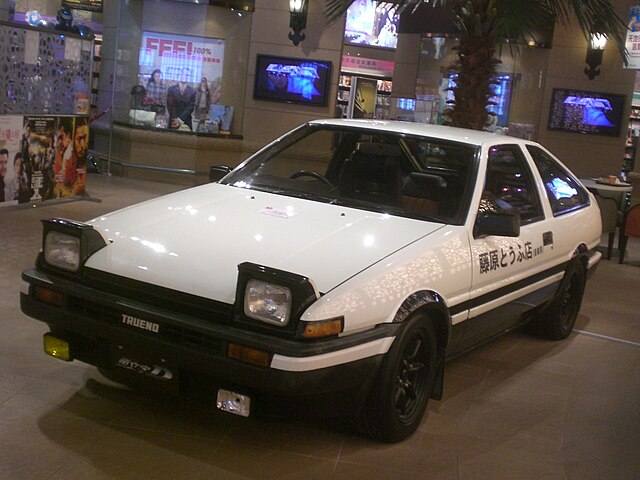
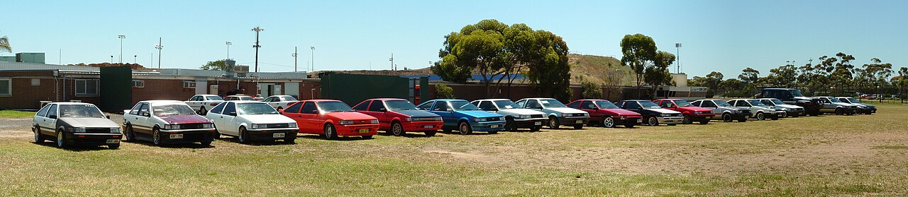
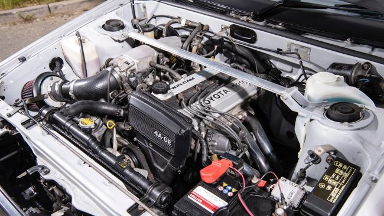
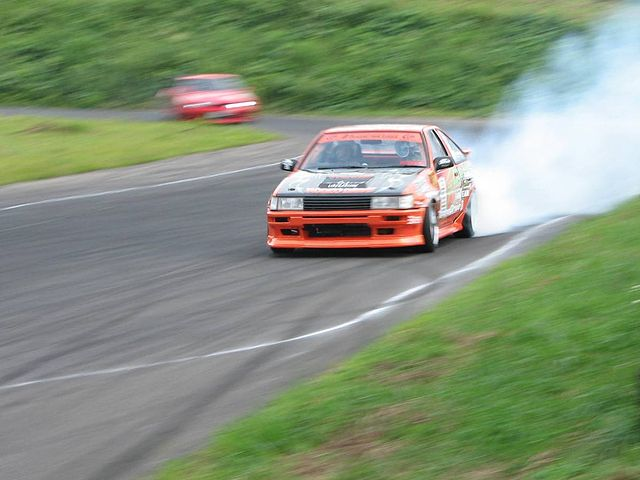
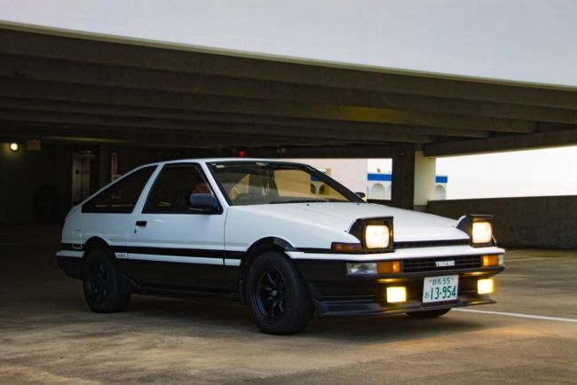

Opis Toyota AE86
Serija AE86 Toyota Corolla Levin i Toyota Sprinter Trueno su mali modeli s prednjim motorom/pogonom na zadnje točkove u okviru pete generacije Corolle (E80) s prednjim motorom i pogonom na prednje točkove—koje je Toyota prodavala od 1983. do 1987. u kupeu i liftback konfiguracijama. Ime Trueno potječe od španjolske riječi za grmljavinu, a Levin od srednjoengleske za munju. U Japanu je Sprinter Trueno bio ekskluzivan za zastupstva Toyote u Japanu pod nazivom Toyota Auto Store, dok je Corolla Levin bila ekskluzivna za Toyota Corolla Store.

Historija AE86
Pogodni za trke, automobili su bili lagani, pristupačni, lako se modifikuju i imali su petostepeni ručni mjenjač, diferencijal sa ograničenim proklizavanjem (Limited Slip Differencial-LSD), MacPherson prednji ovjes, visoki broj obrtaja (7800 o/min), ravnotežu težine prednje/zadnje strane auta blizu 50/50, i što je još važnije, raspored prednjeg motora/zadnjeg pogona – u vrijeme kada je ova konfiguracija opadala u cijeloj industriji. Toyota AE86 (kao i AE85) je napravljena ili u fabrici Kanto Higashi-Fuji, ili u fabrici Takaoka. Procjenjuje se da je ukupno napravljeno više od 360.000 AE86.

Specifikacije AE86
- Motor: 1.6L četverocilindrični motor (4A-GE)
- Pogon: Prednji motor, pogon na zadnje točkove (RWD)
- Ručno mjenjač: 5-brzinski ručni mjenjač
- Diferencijal: LSD (Limited Slip Differential)
- Težina: Otprilike 900 kg
- Visoki broj obrtaja: 7800 o/min
- Težina raspored: 50/50 prednja/zadnja

Drift i motorsport
Široko popularan za Showroom Stock, Grupu A i Grupu N, reli i klupske trke, svojstveni kvaliteti automobila takođe su donijeli AE86 ranu i trajnu međunarodnu istaknutost u disciplini moto sportskog drifta. Godine 2015. Road & Track nazvao je AE86 "kultnom ikonom, neraskidivo isprepletenom s najranijim danima drifta".

Naslijeđe AE86
AE86 nastavlja da inspiriše Toyotu 86 (2012-danas), sportski automobil 2+2 koji su zajednički razvili Toyota i Subaru, proizveden od strane Subarua—i plasiran i kao Toyota GT86, Toyota FT86, Scion FR-S i Subaru BRZ.
U novembru 2021. Toyota je privremeno ponovo pokrenula proizvodnju ograničenog broja dijelova za AE86, a dileri su počeli primati narudžbe za nove zglobove i stražnje kočnice. Predviđene su za novu proizvodnju i poluosovine zadnje osovine. Toyota je također objavila da je ovo ponovno pokretanje privremeno, a dijelovi će biti dostupni samo dok traju zalihe.
